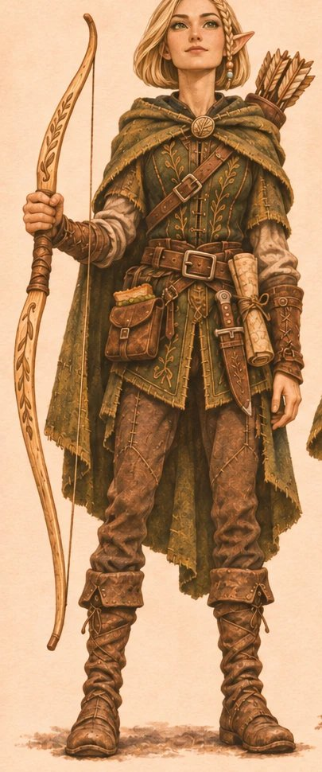

повесть о ворчливом гноме, верных друзьях и горе, которая его ждала
Дамбалдур Трампампури последний бутерброд
в которой ворчливый воин, тихий маг, эльфийка-следопыт, храмовница с огненным моргенштерном и орк, не понимающий собственных заклинаний, отправляются в путь — и находят дом там, где совсем не ждали
❦
книга первая

Моим детям,
которые слушали эту историю первыми
и всегда спрашивали: «А что было дальше?»
Содержание
- IГде мы?читать →
- IIЭкзамен для новичков·
- IIIДорога, которой нет·
- IVПровал·
- VДамбалдур Великий·
черновые названия глав — поменяем, когда главы будут написаны
Карта

Пара слов о мире
Есть на свете земли надёжные, как гномья кладка: их давно нарисовали на картах, по ним ходят телеги, в них пекут хлеб и спорят о соседях. Там стоят людские королевства, шумят эльфийские леса, а в горе-вулкане живут гномы — народ ворчливый, сильный и очень любящий бутерброды.
Но бывает и так: стоит земле остаться без присмотра, стоит в ней завестись чудищам — и она начинает пропадать с карты. Сначала бледнеет, потом становится белым пятном. Тропы в белых пятнах переползают с места на место, а что там водится — не знает никто.
Для таких мест и существует гильдия авантюристов. Её люди уходят в белые пятна, чтобы открыть их заново, — и туда, вслед за ними, снова приходят жить. Об одних таких путниках и пойдёт рассказ.
Действующие лица

Дамбалдур Трампампур
дворф-воин, умеющий коватьРыжая борода, огромный нос и огромное сердце. Ворчит на всё на свете, кроме бутербродов и друзей.

Лириан
тихий маг, капитанДелает вещи тяжёлыми и лёгкими, плетёт цепи из чернильной тьмы. Улыбается, когда шутят другие.

Элира
эльфийка-лучница, следопытВсегда знает, куда идти. Бережёт друзей больше всего на свете — и таскает кусочки чужих бутербродов.

Теона
храмовница светаЛечит светом, а моргенштерном с огненным сердцем промахивается нарочно, чтобы попасть. И всегда извиняется.

Орк-маг
новый другКолдует по-настоящему, но половину сам не понимает. Хотел бурю — получил тучку, которая льёт суп.
глава первая
Где мы?
♪ у главы есть музыка — кнопка внизу справа
Дамбалдур Трампампур проснулся оттого, что ему в бороду падал снег.
Это было неправильно. В бороде место крошкам от бутерброда, на худой конец опилкам. Но не снегу.
Дамбалдур открыл один глаз. Над ним висело серое небо. Он открыл второй глаз. Небо лучше не стало.
— Так, — сказал Дамбалдур. — Кто это сделал?
Ответа не было. Вокруг стояли сосны, высокие и тёмные, засыпанные снегом по самые макушки. За соснами поднимались горы. Что было за горами, Дамбалдур не видел, и это ему тоже не понравилось.
Он сел и проверил хозяйство. Топор на месте. Шлем на месте, и вмятины на нём свои, родные. На поясе молот, кошель и узелок с бутербродами.
Узелок был цел. Дамбалдур выдохнул с таким облегчением, что с ближайшей сосны съехала снежная шапка.
— Ну хоть что-то в этом мире правильно, — проворчал он.
Слово «мир» он сказал и сам удивился. Мир был не тот. Он не помнил ни этих сосен, ни этих гор, ни того, как сюда попал. Последнее, что он помнил, был тёплый вечер, друзья рядом и очень хороший бутерброд. А теперь лес, снег и тишина. Густая, нетронутая тишина, будто здесь сто лет никто не разговаривал.
— Эй! — крикнул Дамбалдур. — Есть тут кто-нибудь?
— Есть, — ответили у него над головой. — И этот кто-нибудь хочет знать, почему ты так громко храпишь.
Дамбалдур задрал голову. На толстой ветке, свесив ноги, сидела Элира. Светлые волосы растрепались, на плаще лежал снег, а вид у неё был такой, будто она сидит тут давно и успела заскучать.
— Я не храплю, — сказал Дамбалдур. — Я дышу. Мощно.
— С соседней горы от твоего дыхания осыпались камни, — сказала Элира и бесшумно спрыгнула в снег. — Я тебя по нему и нашла. Остальных пока нет.
Сказала она это спокойно. Но Дамбалдур заметил, как её пальцы быстро пробежали по бусинам в прядке у виска. По одной бусине за каждого друга. Он знал эту привычку: так Элира проверяла, что никого не потеряла.
— Найдём, — буркнул он. — Ты ведь у нас лучшая в мире ищейка.
— Следопыт, — поправила Элира.
— Я и говорю, ищейка.
Элира фыркнула, присела у сугроба и замерла. Смотрела она на снег так, как Дамбалдур смотрит на хороший кусок ветчины: внимательно и с любовью.
— Туда, — сказала она наконец. — Кто-то шёл, падал, вставал, снова падал и, кажется, извинялся перед ёлкой.
— Теона, — сказали они хором.
Теону нашли у замёрзшего ручья. Она сидела на камне, обняв свой огромный моргенштерн, и очень вежливо разговаривала с ёлкой, в которую только что врезалась.
— Простите, пожалуйста, — говорила она ёлке. — Я вас совсем не заметила. Вы такая... зелёная.
— Теона! — крикнула Элира.
Теона подскочила, увидела друзей и просияла. Она кинулась обниматься и обняла Дамбалдура вместе со своим оружием, потому что выпустить его из рук не догадалась. Железный шар был тяжёлый и тёплый. Сквозь трещины в нём мерцало оранжевое, как угли в печке.
— Я думала, я одна, — сказала Теона, и голос у неё дрогнул. — Проснулась, а вокруг только снег. Я сидела и считала до тысячи, чтобы не бояться. Дошла до четырёхсот двенадцати.
— А потом? — спросила Элира.
— А потом врезалась в ёлку.
Лириана нашли последним. Он не падал, не храпел и не извинялся перед деревьями. Он сидел под скалой и что-то записывал в маленький блокнот. Пальцы у него, как всегда, были в чернилах.
— Я знал, что Элира найдёт, — сказал Лириан, поднимаясь. — Поэтому сидел на одном месте. Того, кто бегает, искать труднее.
— А если бы не нашла? — спросила Элира.
Лириан подумал.
— Тогда я бы очень долго сидел, — сказал он и чуть-чуть улыбнулся.
Четверо стояли посреди заснеженного леса и смотрели друг на друга. Все. Вместе. Дамбалдур только сейчас заметил, что всё это время сжимал топор так, что побелели костяшки, и разжал пальцы.
— Ну, — сказал он. — А теперь кто-нибудь скажет мне, где мы?
Никто не сказал.
— Я пробовал колдовать, — тихо сказал Лириан. — Магия как будто спит. Я её чувствую, а она не слушается.
— А я не знаю ни одного следа, — сказала Элира. — Звери чужие, ветер чужой. Раньше я бы уже знала, куда идти.
Теона посмотрела на свои ладони и ничего не сказала. Только крепче прижала моргенштерн.
Дамбалдур тоже решил проверить. Он хлопнул в ладоши, топнул левой ногой, потом правой. Так гномы делают, когда просят себе удачи, и обычно после этого случается что-нибудь маленькое и приятное: дверь открывается сама, или в кармане находится лишняя монетка.
Ничего не случилось. Даже снежинка не изменила направления.
— Ладно, — сказал он, отдуваясь. — Значит, будем как все. Ногами.
— Куда? — спросила Теона.
Лириан закрыл блокнот. Он был у них капитаном, и, когда он закрывал блокнот, все знали: сейчас скажет, что делать.
— Туда, где люди, — сказал он. — Где люди, там дороги. Где дороги, там карты. А по карте поймём, где мы.
— А где люди, там еда, — добавил Дамбалдур. — Это тоже важно.
Он развязал узелок, пересчитал бутерброды и объявил очень серьёзно:
— Внимание. У нас четыре бутерброда. Делим на неделю. По кусочку в день. Никто их не трогает. Особенно эльфы.
Элира невинно посмотрела в небо.
Через снежные горы шли пять дней.
Днём было холодно. Ночью было очень холодно. Дамбалдур ворчал на снег, на ветер, на скользкие камни и на то, что в этом мире, похоже, никто не умеет строить нормальные дороги. Элира шла впереди и читала следы: заячьи, лисьи, а однажды огромные и глубокие, будто кто-то ронял в снег бочки.
Она долго стояла над ними. Потом сказала:
— Ночуем без костра.
Без костра было ещё холоднее. Они сидели вчетвером, прижавшись спинами к скале, и Теона вдруг спросила шёпотом:
— А мы вернёмся домой?
Никто не ответил сразу.
— Я один раз уже потеряла всех друзей, — сказала Элира в темноту. Голос у неё был ровный, но бусины в волосах тихонько стукнули друг о друга. — Давно. Больше не собираюсь. Поэтому куда вы, туда и я. А где дом, разберёмся.
Дамбалдур ничего не сказал. Он только подвинулся, чтобы Теоне было теплее, и накрыл её краем своего плаща. Плащ был огромный и пах дымом. Теона уснула почти сразу.
На второй вечер выяснилось, что бутерброды кончились.
— Как это кончились? — спросила Теона. — Мы же делили на неделю.
Дамбалдур покраснел до самой бороды.
— Я делил, — сказал он с достоинством. — Просто неделя получилась короткая. Гномья неделя. Она быстрее.
Элира прыснула. Лириан открыл блокнот и написал: «Гномья неделя — два дня».
А на четвёртый день сугроб рядом с ними встал.
Он был втрое выше Дамбалдура. Белая косматая шерсть, как старый снег. Руки до земли. И два маленьких синих глаза, которые смотрели глупо и голодно.
— Тролль, — сказала Элира и выхватила стрелу.
Второй сугроб тоже встал. И третий.
— Три тролля, — поправилась Элира.
— Да хоть десять, — сказал Дамбалдур и перехватил топор. — Я голодный. А голодный гном хуже десяти троллей.
Первый тролль выдрал из склона глыбу льда и швырнул.
Глыба летела прямо в Теону. Теона стояла с моргенштерном в руках и смотрела на неё круглыми глазами.
Дамбалдур прыгнул. Глыба ударила его в шлем, раскололась на куски, а он покатился по снегу.
— Новая вмятина, — сообщил он, поднимаясь. — Вот теперь я злой.
Элира выстрелила. Стрела ушла троллю в плечо, и тот заревел.
Второй тролль подкрался сзади, сгрёб Дамбалдура в охапку и поднял, как мешок с картошкой.
— Поставь, где взял! — заорал Дамбалдур, дрыгая ногами. — Я тебе не бутерброд!
Тролль не поставил. Он сжал лапы. Сильно. У Дамбалдура затрещали ремни на кольчуге, и он перестал кричать, потому что кричать стало нечем. Воздуха не было.
— Дамбалдур! — закричала Теона.
Тут случилось вот что. Дамбалдур очень не любил, когда его сжимают. А ещё он не знал, насколько он сильный. Никто из гномов не знает, им просто не приходит в голову проверять.
Он упёрся локтями. Потом плечами. Лапы тролля медленно, со скрипом, разошлись в стороны, как ворота. Дамбалдур выскользнул, ухватил тролля за косматую лапу, крякнул и перебросил его через себя.
Тролль пролетел над сугробом, кувыркнулся и съехал по склону на спине, как на санках.
— Голодный гном, — прохрипел Дамбалдур. — Я же предупреждал.
Первый тролль, тот, что со стрелой в плече, бросился на них, и тут Теона подняла моргенштерн. Шар загудел. Сквозь трещины полыхнуло оранжевым.
Она прицелилась в тролля и, конечно, промахнулась. Нарочно.
Шар ударил в лёд прямо у ног тролля. Лёд зашипел, из-под удара рванул горячий пар, и на миг ничего не стало видно. Когда пар рассеялся, тролль стоял мокрый, с голой проплешиной на боку, где растаяла шерсть, и с ужасом смотрел на Теону.
— Простите, пожалуйста! — крикнула ему Теона.
Тролль попятился.
— Они боятся тепла! — крикнула Элира. — Теона, ещё!
Третий тролль поднял над головой огромный снежный ком, целясь в Лириана. Лириан стоял за камнем. Колдовать он не мог. Он слепил снежок, маленький и обычный, и бросил его, потому что больше бросить было нечего.
Снежок полетел. На середине пути он вдруг потяжелел и пошёл вниз, будто это был уже не снег, а камень. Он ударил тролля в живот с глухим «бумм». Тролль охнул, уронил свой ком себе на голову и сел.
Лириан смотрел на свою руку. На снегу у его ног, там, где он слепил снежок, осталось маленькое чёрное пятнышко. Как будто кто-то капнул чернилами.
— Это ты? — спросила Элира.
— Не знаю, — честно сказал Лириан. Он был бледный. — Я ничего не делал. Я просто очень хотел, чтобы попало.
Тролли переглянулись: мокрый с проплешиной, сидящий в снегу и тот, что только что приехал на спине. Потом все трое развернулись и, увязая по пояс, ушли в метель.
Дамбалдур сел в сугроб. Борода у него была в снегу, шлем съехал на нос. Теона опустилась рядом, положила ладонь ему на лоб, где из-под шлема сочилась кровь, и закрыла глаза. От ладони пошло тёплое золотое свечение, слабенькое, как свеча за окном. Ссадина затянулась.
— Получилось, — удивлённо сказала Теона. — Свет ещё со мной.
— Конечно с тобой, — сказал Дамбалдур. — Куда он денется.
Потом он отряхнулся и добавил:
— Я считаю, это была блестящая победа. Особенно моя часть.
На этот раз спорить никто не стал.
На пятый день горы кончились.
Они поднялись на перевал и остановились. Внизу лежала широкая долина. А на её краю, выше облаков, стояла гора.
Огромная, тёмная, как старое железо, с плоской вершиной, над которой вилась тонкая струйка дыма. На склонах блестели чёрные гладкие скалы, будто кто-то пролил и заморозил стекло. А у самого подножия, далеко-далеко, мерцали тёплые огоньки.
— Обсидиан, — сказал Лириан. — Целые скалы. Это вулкан.
Дамбалдур снял шлем.
Он сам не знал, зачем это сделал. Просто снял и держал в руках. Снег падал ему на рыжую макушку, а он не замечал.
Элира посмотрела на него. Потом на Теону. Теона посмотрела на Лириана. Все трое подумали одно и то же: Дамбалдур молчит. А Дамбалдур не молчал никогда. Он ворчал, спорил, шутил, жевал и снова ворчал. Даже во сне он ворчал.
Ветер донёс со стороны горы запах. Дым, горячий камень, железо.
Запах кузницы.
У Дамбалдура защипало в носу. Он не понял почему. Он смотрел на огоньки у подножия, и ему почему-то очень хотелось туда, как хочется под одеяло, когда замёрз. Но он не знал этой горы. Он был уверен, что никогда её не видел.
— Дамбалдур? — Элира тронула его за плечо. — Ты как?
— Нормально, — сказал Дамбалдур и откашлялся. — Гора как гора. Большая. Дымит. Ничего особенного.
Он надел шлем. Потом, сам не зная зачем, хлопнул в ладоши и топнул левой ногой, потом правой. Как тогда в лесу.
Ветер стих. Сразу, будто его выключили. Снег перестал лететь в глаза, и тропа вниз, в долину, вдруг показалась шире и ровнее.
— Ой, — сказала Теона. — У вас получилось!
Дамбалдур посмотрел на свои ладони. Потом на гору.
— Повезло, — буркнул он. — Пошли. Нам к людям.
И они пошли вниз. Мимо горы.
Дамбалдур оглянулся только один раз. Ему показалось, что огоньки у подножия мигнули. Будто гора смотрела ему вслед.
Земля людей началась с фермы.
Сначала был забор. За ним поле, где из-под последнего снега торчала прошлогодняя стерня. Потом выскочил пёс, понюхал бороду Дамбалдура, чихнул и с визгом удрал. А на заборе висели дети.
Детей было трое. Они смотрели на путников во все глаза.
— Мама! — заорал самый маленький. — Мама! Там ходит ёжик в железе!
— Я не ёжик! — возмутился Дамбалдур. — Я гном!
— Мама! Ёжик говорит, что он гном!
Девочка постарше смотрела только на Элиру. На её острые уши, на лук, на светлые волосы.
— Ты настоящая эльфийка? — шёпотом спросила она.
— Самая настоящая, — так же шёпотом ответила Элира.
— А правда, что эльфы воруют бутерброды?
Дамбалдур остановился, и Теона врезалась ему в спину.
— Так дедушка говорит, — объяснила девочка. — Что давным-давно эльфы стащили у гномов самый большой бутерброд на свете. И с тех пор гномы с эльфами воюют.
Дамбалдур медленно повернулся к Элире. Элира медленно отвела глаза.
— Я такого не помню, — сказала она. — В мои-то годы много чего не помнишь.
— А я помню, — сказал Дамбалдур и сам удивился. — То есть не помню. Но знаю, что это правда. Вот тут знаю. — Он постучал себя кулаком по кольчуге, там, где сердце.
Лириан что-то быстро записал.
К вечеру они добрались до таверны.
Она стояла у самой дороги, кривая и тёплая, с жёлтыми окнами и вывеской, на которой был нарисован гусь в короне. Из трубы шёл дым и пахло жареным луком. Живот у Дамбалдура заурчал, и гусь на вывеске, кажется, вздрогнул.
Внутри было людно, шумно и жарко. Но стоило им войти, как шум стих. Все уставились на острые уши Элиры, на рыжую бороду Дамбалдура и снова на уши. Кто-то уронил ложку.
За стойкой стоял хозяин, широкий и румяный, с полотенцем на плече. Он протёр одну и ту же кружку четыре раза подряд и наконец сказал:
— Эльфийка. И гном. В моей таверне. В один день.
— Это плохо? — спросила Теона.
— Это небывало! — сказал хозяин. — Последнего эльфа тут видели при моём деде. А гномов я только на картинках видел. Они, говорят, из своих гор носу не кажут. Вы надолго? Мне надо сбегать за женой. Она не поверит.
— Нам бы поесть, — сказал Лириан. — И узнать, где мы.
— Где вы, это просто, — обрадовался хозяин. — Это таверна «Гусь и корона». А до большого города Ратвальда полдня пути по дороге.
Четверо переглянулись. Ни «Гусь», ни «Ратвальд» им ничего не сказали.
— А королевство как называется? — спросил Лириан.
— Королевство Трёх Рек, как же ещё.
Это им тоже ничего не сказало. Лириан медленно закрыл блокнот. Теона взяла Элиру за руку. Значит, правда. Они очень, очень далеко от всего, что знали.
— А поесть, — продолжал хозяин, ничего не заметив. Он посмотрел на Дамбалдура сверху вниз, и голос у него стал ласковый-ласковый. — Для малыша у нас есть детская порция. Каша с мёдом. И маленькая кружечка молока.
В таверне стало очень тихо.
Элира закрыла лицо руками. Теона прикусила губу. Лириан снова открыл блокнот, чтобы ничего не пропустить.
Дамбалдур медленно положил руки на стойку. Борода у него встопорщилась, как у рассерженного кота. Хозяин отступил на шаг.
— Ма-лы-ша? — переспросил Дамбалдур. — Мне очень много лет! У меня борода старше твоей таверны! Я ел бутерброды, когда твой прадед ещё...
И он подпрыгнул. Просто от возмущения. У гномов очень сильные ноги, а возмущение у Дамбалдура было очень большое.
БАМ.
Дамбалдур влетел головой прямо в потолочную балку. Балка треснула, доски разошлись, и Дамбалдур застрял по самые плечи, вместе со шлемом, бородой и возмущением. Снизу торчали только ноги в железных сапогах. Ноги болтались.
Таверна молчала целую секунду.
А потом грохнула хохотом.
— Опять, — вздохнула Элира, вставая. — Он делает это постоянно.
— Снимите меня, — глухо донеслось сверху. — Немедленно. Это было не смешно. Это была проверка вашей балки.
Тянули вчетвером: Элира, Теона, Лириан и хозяин. Дамбалдур выскочил из дыры, как пробка из бутылки, сверху посыпалась труха, а у хозяина в руках остался сапог.
Хозяин посмотрел на дыру в потолке. На Дамбалдура. Снова на дыру.
И расхохотался, добро, от души, даже полотенце упало с плеча.
— Ну, гном! — сказал он, вытирая слёзы. — Ну силища! Знаешь что? Ужин за счёт заведения. Не каждый день у меня гномы потолки бодают. Дыру заделывать не буду, буду гостям показывать.
— Я не против, — проворчал Дамбалдур, натягивая сапог. Но было видно, что он доволен. — А бутерброды у тебя есть?
— Бутерброды? — Хозяин почесал затылок. — Это из легенды, что ли? Хлеб и что-то сверху?
Дамбалдур посмотрел на него с бесконечной жалостью.
— Неси хлеб, — сказал он. — Неси сыр, ветчину, лук и всё, что найдёшь. Сейчас я покажу тебе, что такое настоящий бутерброд.
В ту ночь в «Гусе и короне» ели бутерброды. Высокие, как башни, хрустящие, с ветчиной, сыром и жареным луком. Хозяин съел три и сказал, что впишет их в меню навсегда. Элира утащила кусочек у Дамбалдура, и он сделал вид, что не заметил. Теона извинилась перед балкой.
А Лириан смотрел в окно. Далеко за тёмной долиной, над горой, светилась тонкая красная полоска. Он записал в блокнот: «Магия Д. не работала в лесу. У горы сработала. Почему?»
И подчеркнул два раза.
Утром они вышли к Ратвальду.
Над дорогой поднялись каменные башни с цветными флагами, а под ними стены и ворота. Перед воротами шумела целая река народа: телеги с сеном, торговцы с корзинами, стражники в синих плащах, дети, собаки и гуси.
Город был такой огромный, что даже Дамбалдур на минуту перестал ворчать.
— Ну что, — сказал Лириан у ворот. — Люди есть. Дороги есть. Осталось найти карту.
У ворот висел деревянный щит, весь заклеенный объявлениями. Одно было крупнее остальных, с красной печатью внизу:
«ГИЛЬДИЯ АВАНТЮРИСТОВ ищет тех, кто пойдёт в белые пятна на карте. Опыт не обязателен. Храбрость обязательна. Кормим».
Дамбалдур прочитал его два раза. На слове «кормим» он задержался особенно надолго.
— Вот, — сказал он и ткнул в объявление толстым пальцем. — Вот это мне нравится. Вот это правильный мир.
Элира уже шагала к воротам. Теона догоняла её вприпрыжку, придерживая моргенштерн. Лириан пошёл следом.
Дамбалдур задержался на мосту и оглянулся. Далеко-далеко, на краю неба, над горой поднимался дым. Утром он был тонкий, как нитка. А сейчас стал гуще.
Как будто кто-то там внутри раздувал огонь.
— Дамбалдур! — позвала Элира. — Идёшь?
— Иду, — сказал он.
И они вошли в город.